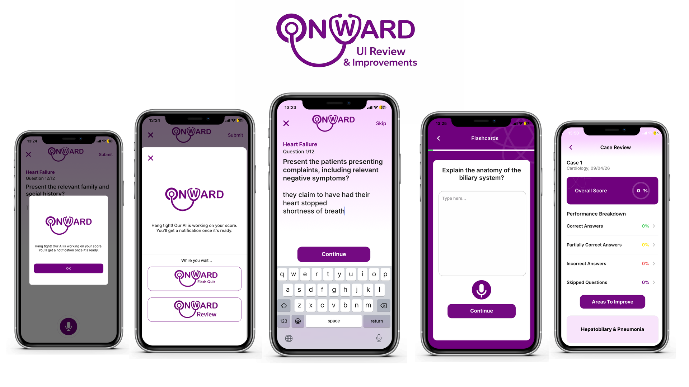
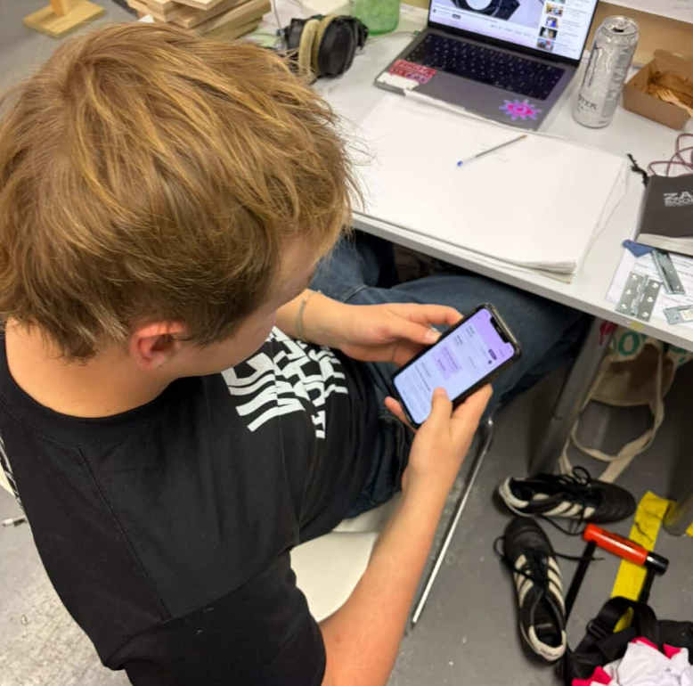
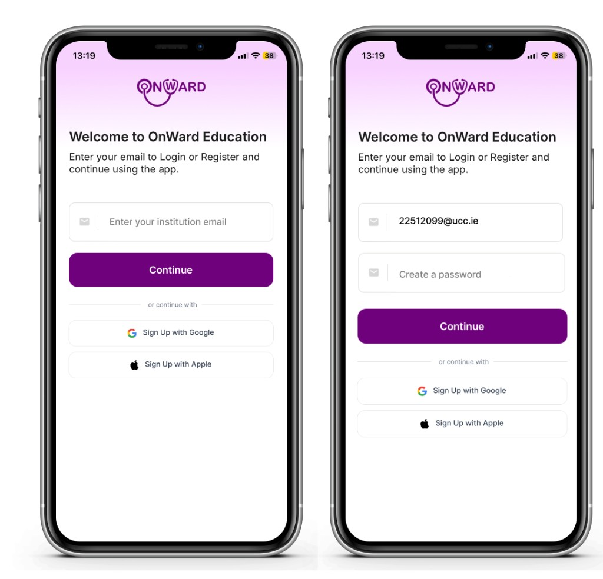
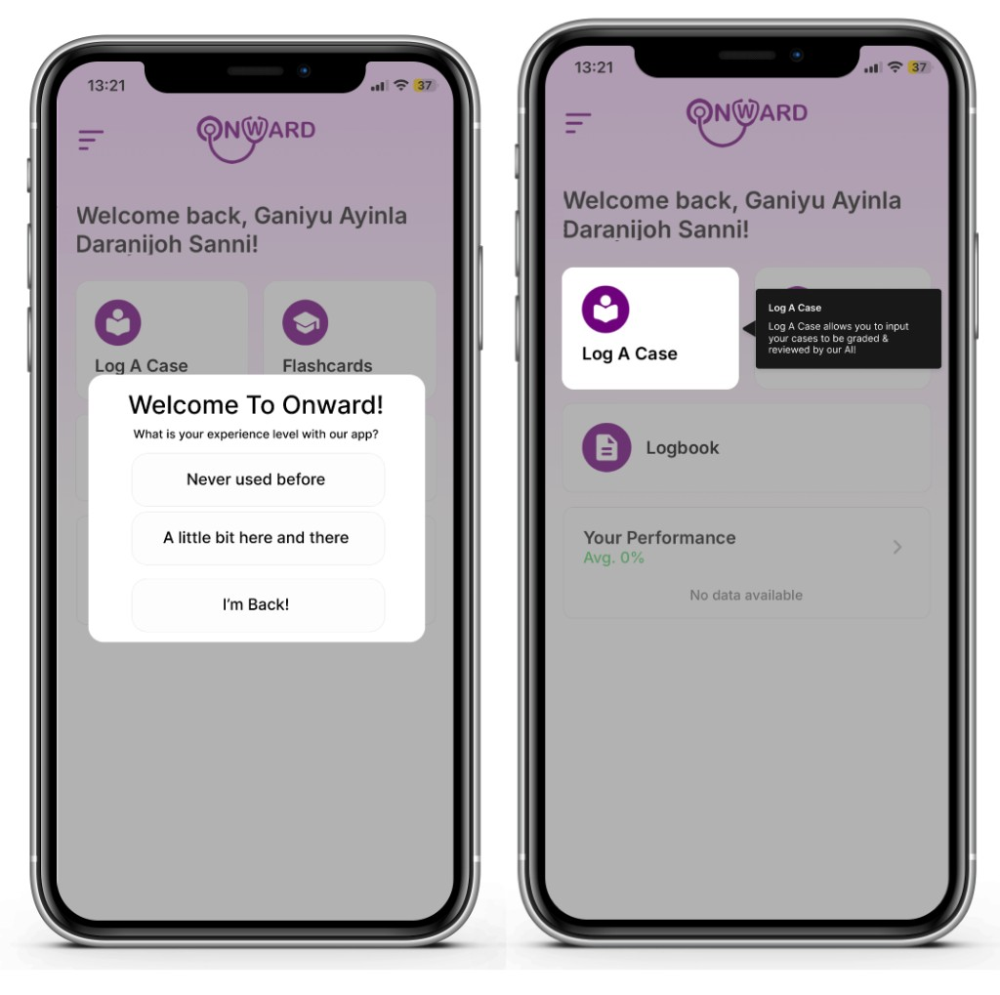
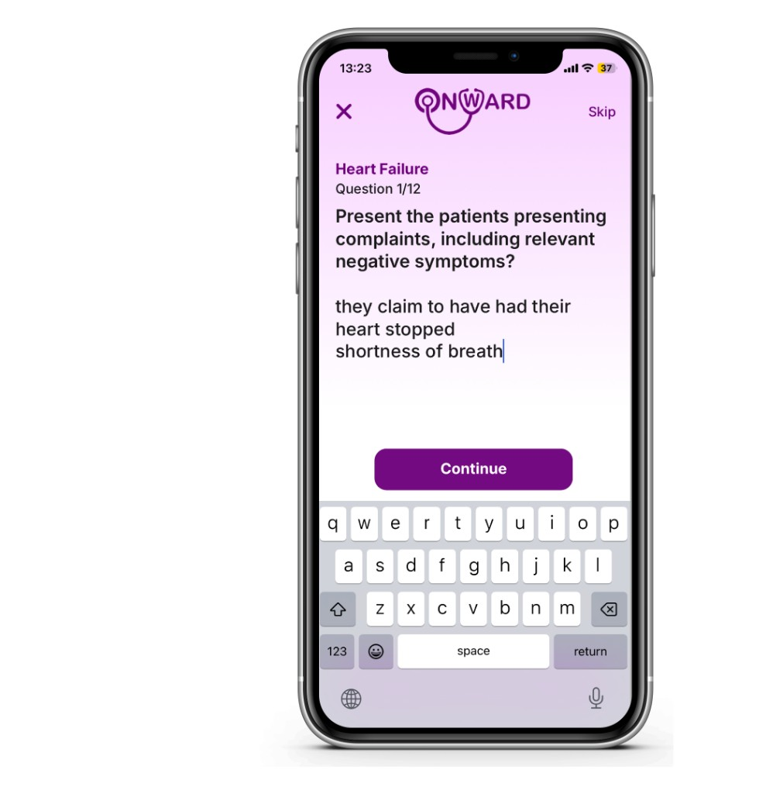
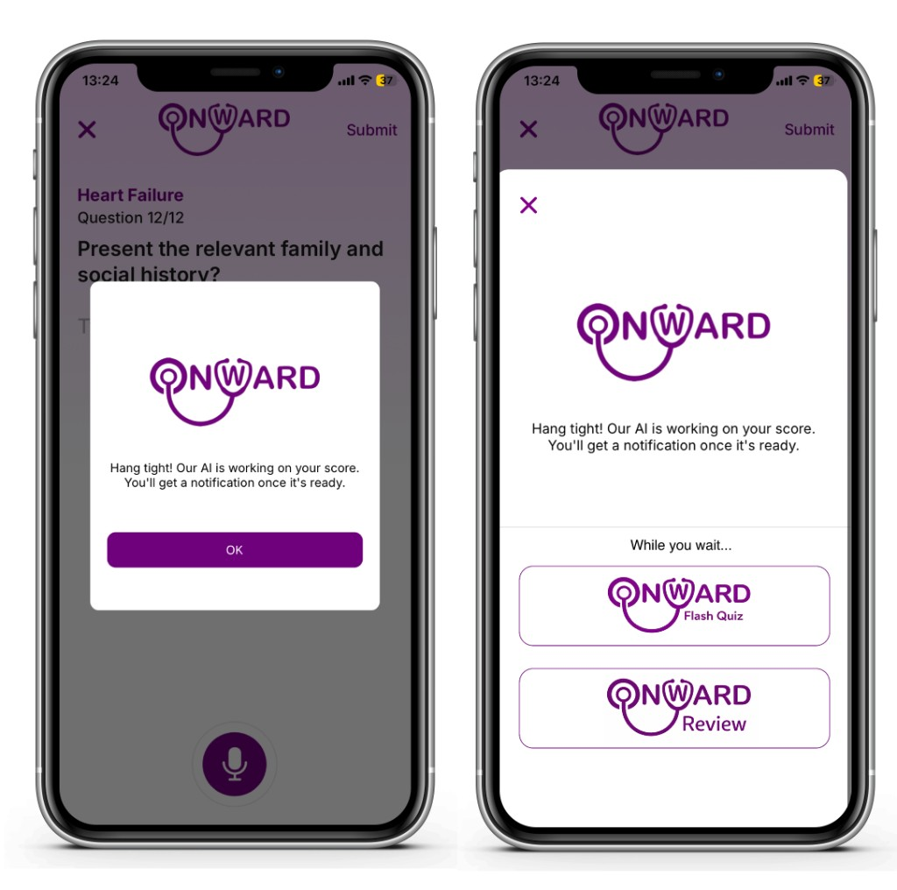
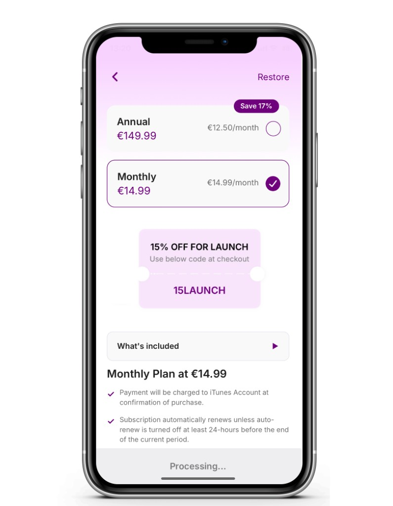
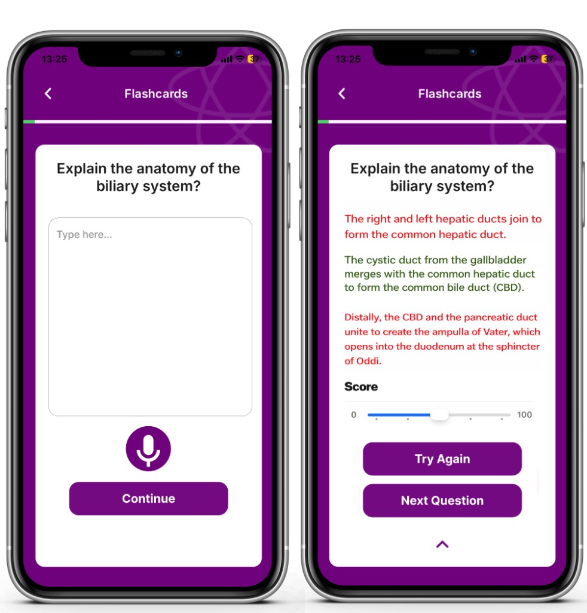
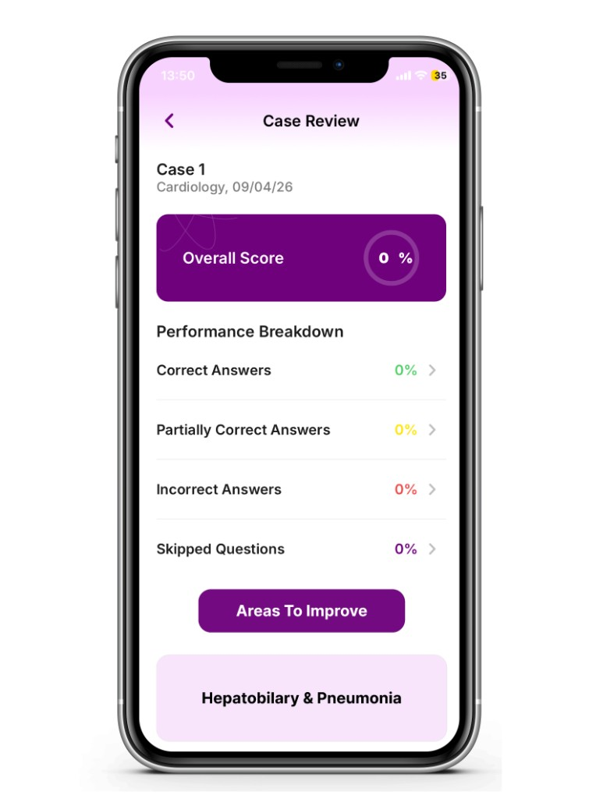

OnWard, UI Review & Improvements
OnWard is an AI-supported clinical learning app for medical students, log a case, receive structured feedback, and revise weak areas. After running six user tests, I redesigned the end-to-end journey to remove friction at sign-up, build trust before payment, and turn wait time into useful study time.


User Testing
Of six user tests conducted, the recurring problems were:
- Pay before use; friction before any value was experienced.
- Information overload during the sign-up process.
- Lack of confirmation awareness; users couldn’t tell when an answer was “in.”
- Dislike of wait times when users filled out a case.
- Layout confusion across screens.
The Question
How might we…
create an easy, intuitive and engaging user experience
that still guides users from sign-up to case completion?
Solution
Redefining our user journey.
Each step below pairs a user-tested problem with a small, opinionated UI change, built around trust, clarity, and momentum.

User Journey · Sign-Up
Signing up via institution email.
- Resolves user information overload and means a quicker sign-up.
- Feels more immersive to the college experience.
- Legitimises sign-ups, keeping everything within the university’s network.

User Journey · First Sign-In
Guiding the user through the functions.
A tool-tip-led introduction tailored to each user’s experience level, so the app meets people where they are:
- Never used before; full tutorial.
- A little bit here and there; key functions only.
- I’m back!; straight into full use.

User Journey · Logging a Case
Adding confirmation buttons & haptics.
- Users decide when their answer is fully entered, instead of the app guessing.
- If the user presses Skip, the topic is automatically added to the Areas To Improve section, turning a skip into useful signal.

User Journey · Results
Filling wait times with options to revise.
- The user no longer has to wait patiently, the time becomes further learning.
- Increases app use time, while reinforcing knowledge.

User Journey · Payment
Payment appears after the user has familiarised themselves.
- Leverages the sunk cost fallacy in a healthy way, value is felt before it’s asked for.
- The user gets a chance to try the app and build trust and understanding first.

User Journey · Flash Quiz
Turn the wait into a flash quiz.
A short, scored quiz fills the wait state, users can Try Again or move to the Next Question. It increases app use time and converts dead time into spaced revision.

User Journey · Results
Areas to Improve / Review.
- Reinforces learning by surfacing weak topics directly.
- Creates a more personalised user experience.
- Lets the user act on the statistics and data about their performance, not just read them.
Outcome
A friendlier, trust-first journey.
Each problem from user testing was met with a targeted UI change, institution sign-up, guided onboarding, explicit confirmations, useful wait states, delayed payment, flash quizzes, and a personalised review section. The result is a journey that earns the student’s time before asking for their attention or money.
Up next